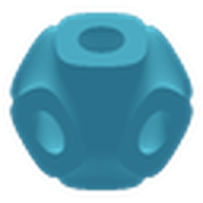
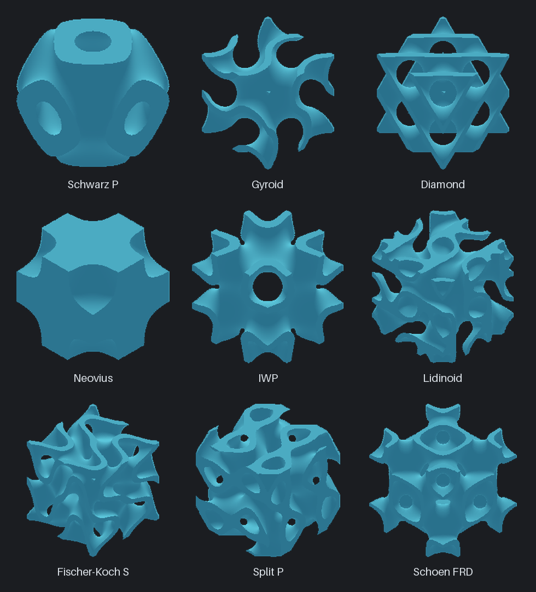

TPMS Generator
for Cinema 4D
Build Schwarz P, Gyroid, Diamond and other triply periodic minimal surface structures as a clean quad mesh, directly inside Cinema 4D. Optionally cut them to the shape of any closed object.

What is a TPMS?
A surface defined by an equation f(x, y, z) = C that repeats in all three directions.
It splits space into two interlocking channels, so it is naturally hollow. TPMS structures are used for lightweight lattices, heat exchangers, bone scaffolds and generative design. This plugin turns them into a procedural Cinema 4D object with parameters in the Attributes Manager. No Volume Builder or Volume Mesher is needed.
Features
Everything is a parameter of a single generator object.
Nine structure types
Schwarz P, Gyroid, Diamond (Schwarz D), Neovius, IWP, Lidinoid, Fischer-Koch S, Split P and Schoen FRD.
Sheet or solid
Hollow Sheet walls, or Solid A / Solid B with one of the two channels filled.
Fully controllable
Cell size per axis, wall thickness, iso level C and phase offset.
Clean quad mesh
Surface Nets output with a Phong tag. Thin walls are kept apart, not fused.
Cut to any shape
Drop a closed object under the generator. Use Child Shape turns on and the child is hidden automatically.
Quality by voxel size
One parameter trades speed for detail. Fast with numpy; works without it, with a smaller grid.
Installation
Developed for Cinema 4D 2027 (Python plugin).
- Download the latest release zip from the Releases page, or clone the repository.
- Copy the
tpmsgeneratorfolder into Cinema 4D's plugins folder: Edit > Preferences > Open Preferences Folder, thenplugins. Remove any older copy first. - Restart Cinema 4D.
- Press Shift+C, type
TPMS Generatorand create the object.
tpmsgenerator/
tpmsgenerator.pyp plugin code
res/
c4d_symbols.h
icons/tpms_generator.png plugin icon
description/ parameter UI (.res, .h)
strings_us/ UI texts (.str)
Quick start
- Create a TPMS Generator. By default it fills a 400 × 400 × 400 cm box with a Schwarz P sheet.
- Change Type, Mode, Cell Size and Thickness.
- To cut it to a shape, drag a closed object (for example a Sphere) under the generator in the Object Manager.
- Keep Voxel Size large (8–10) while editing and reduce it (3–4) for the final result.
Parameters
Shown in the Attributes Manager of the TPMS Generator.
| Parameter | Default | What it does |
|---|---|---|
| Type | Schwarz P | The TPMS function: Schwarz P, Gyroid, Diamond, Neovius, IWP, Lidinoid, Fischer-Koch S, Split P or Schoen FRD. |
| Mode | Sheet | Sheet: only the wall, both channels empty. Solid A (f < C): one channel filled. Solid B (f > C): the other channel filled. |
| Cell Size | 100, 100, 100 cm | Size of one repeating cell in X, Y and Z. Different values stretch the structure. |
| Thickness | 0.4 | Wall thickness in Sheet mode, in normalised field units (0–2), not centimetres. Ignored in Solid modes. |
| Level (C) | 0 | The iso-value C. At 0 both channels have equal volume; other values enlarge one channel; extreme values break up or remove the structure. |
| Phase Offset | 0, 0, 0 cm | Shifts the pattern inside the region. |
| Voxel Size | 4 cm | Grid spacing and the main quality control. Smaller = finer mesh, more polygons, slower. A sheet wall should be at least about 2 voxels thick. |
| Max Grid Points | 4,000,000 | Safety limit. If Voxel Size would exceed it, the voxel size is raised automatically and the Console prints a message. |
| Use Child Shape | off | Off: fills Box Size. On: the first child object defines the shape (closed mesh). Switched on automatically when you place an object under the generator. |
| Box Size | 400, 400, 400 cm | Size of the box filled when Use Child Shape is off. |
| Margin | 0 cm | Enlarges the sampled region around the box or shape. |
numpy and performance
With numpy
About 5 s for 1.2 million vertices from an 8-million-point grid in tests outside Cinema 4D; about 0.5 s for the default settings (not counting the time Cinema 4D needs to create the polygon object).
Without numpy
Some Cinema 4D installations do not include it. The plugin then uses a pure-Python path that gives the same mesh but is much slower, so the grid is limited to 300,000 points and the voxel size is raised if needed.
Rebuilds
The mesh is rebuilt only when a parameter or the child shape changes. Each rebuild prints a [TPMS] built … line in the Console.
FAQ and troubleshooting
The viewport is very slow
Check the Console for repeated [TPMS] built ... lines while you only orbit the viewport. If they repeat, please open an issue with those lines. Also increase Voxel Size while editing.
The Console says "numpy not found"
The slower pure-Python path is used and the grid is limited to 300,000 points. Make numpy available to Cinema 4D's Python for speed and finer detail (see Maxon's documentation on installing Python packages; steps for your version are not verified here).
The surface is rough or walls touch each other
The wall is thinner than about 2 voxels. Reduce Voxel Size or raise Thickness.
Nothing is generated
Look for [TPMS] error: in the Console. With Use Child Shape on, the child must be a closed mesh and the first child of the generator.
The plugin does not appear, or its UI is empty
Check the Console at startup, check the plugin ID conflict (below), and make sure the whole res folder sits next to tpmsgenerator.pyp.
What are the plugin IDs?
The plugin uses Maxon's shared test IDs 1000008 (generator) and 1000009 (helper for child objects). IDs 1000001–1000010 are shared by all developers and can clash with other plugins; change PLUGIN_ID at the top of tpmsgenerator.pyp if Cinema 4D reports a conflict, and register your own free ID at developers.maxon.net before distributing a modified build. Scenes saved with one ID do not recognise the object after the ID is changed.
Status and limitations
res/ UI files, icon loading, reading a real child object, the automatic child setup and the rebuild/caching behaviour have not been run inside Cinema 4D by the author. Please report anything you see in the Console.
- Features below about 2 voxels cannot be represented exactly.
- Clipping to a child shape is approximate near the shape's surface and exact at the box faces.
- Only the first child is used, and it must convert to a closed polygon mesh.
- Opening a scene that already has a child under a TPMS Generator makes the plugin treat that child once as "newly placed" (Use Child Shape on, child hidden).